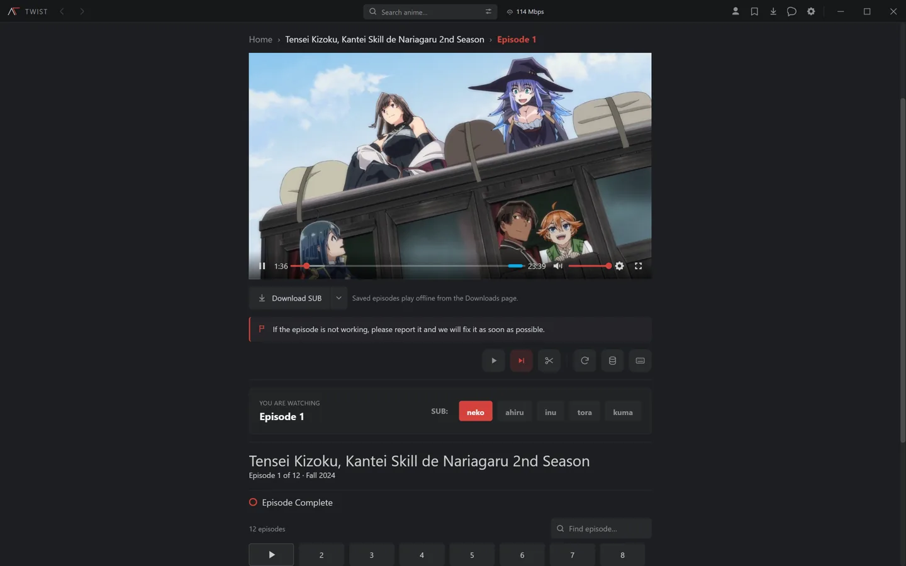
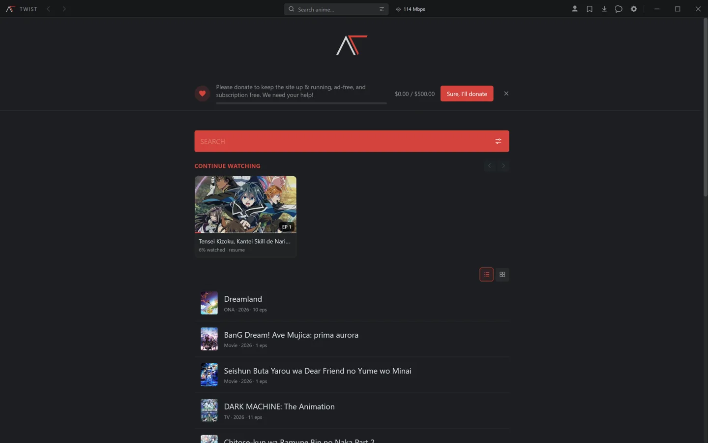
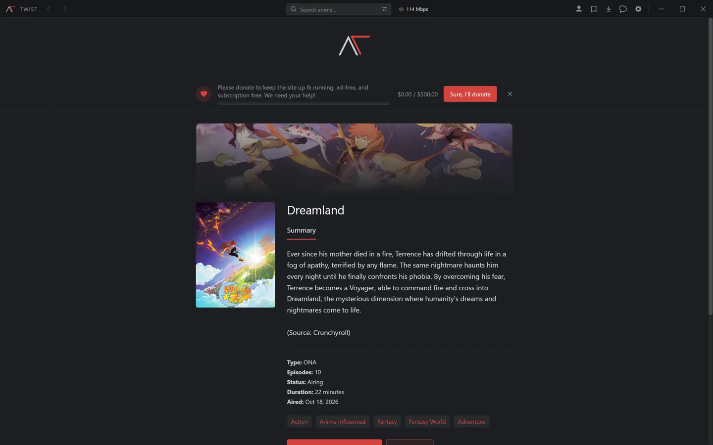
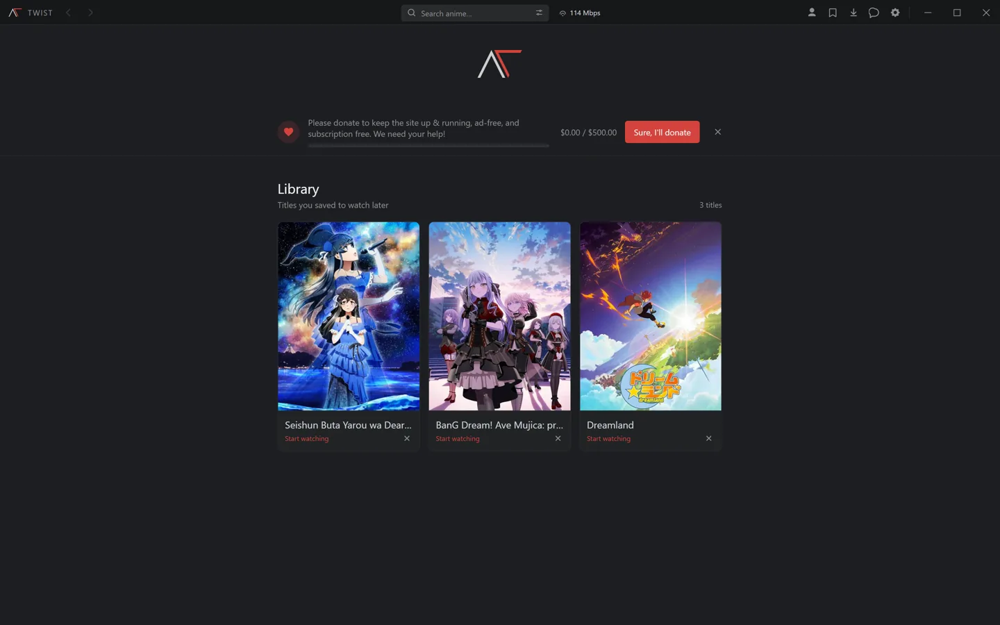
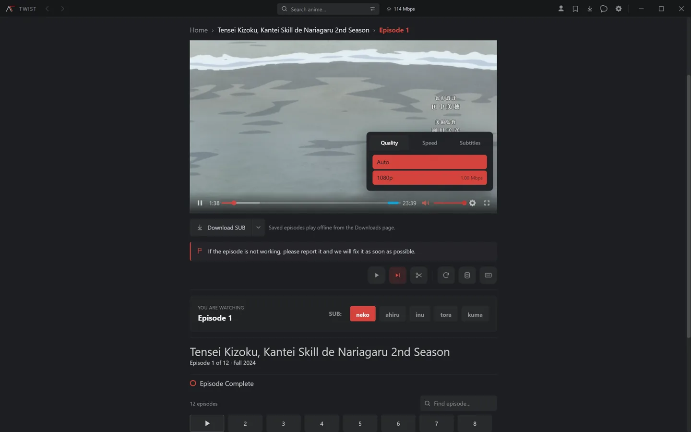

A player that behaves like one
Quality selection, subtitles you can restyle, skip intro and outro, auto-next and keyboard shortcuts. Fullscreen survives switching episodes.
Desktop app · Windows · macOS · Linux
Twist is a desktop player for anime. No ads, no accounts needed to watch, and your history and library stay on your own machine.
Free and open source · MIT licensed

Quality selection, subtitles you can restyle, skip intro and outro, auto-next and keyboard shortcuts. Fullscreen survives switching episodes.
Several mirrors, tried automatically. If one is down or slow, Twist moves on instead of leaving you on a spinner.
The stream's own subtitles come first, and extra languages can be pulled from OpenSubtitles inside the player.
Download episodes at the quality you want, pause and resume, then play them back with no connection at all.
An optional mode streams episodes straight from torrents and treats them like a normal episode — seekable, with a real duration. Off by default.
Continue watching, a library for later, and per-episode history you can prune one episode at a time.
Screenshots taken from Twist itself — the same build you download.




Download the build for your platform from the latest release. Builds are unsigned, so your OS may ask you to confirm the first launch.
Torrent streaming needs ffmpeg. Twist can download it for you, or point it at an install you already have.
It ships with no content, no catalogue and no credentials. It does not host, index or distribute anything — it resolves streams from third-party providers the same way a browser does.
Comply with the laws where you live and with the terms of any service you use. The authors do not endorse copyright infringement.
Third-party services are not affiliated with this project and can change or disappear at any time. Nothing here is guaranteed to work.
When torrent streaming is enabled, your IP address is visible to other peers in the swarm. That is how BitTorrent works. Only use it where you are allowed to.